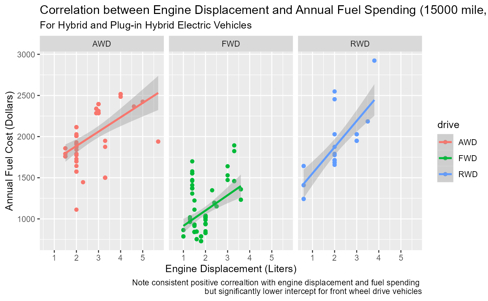
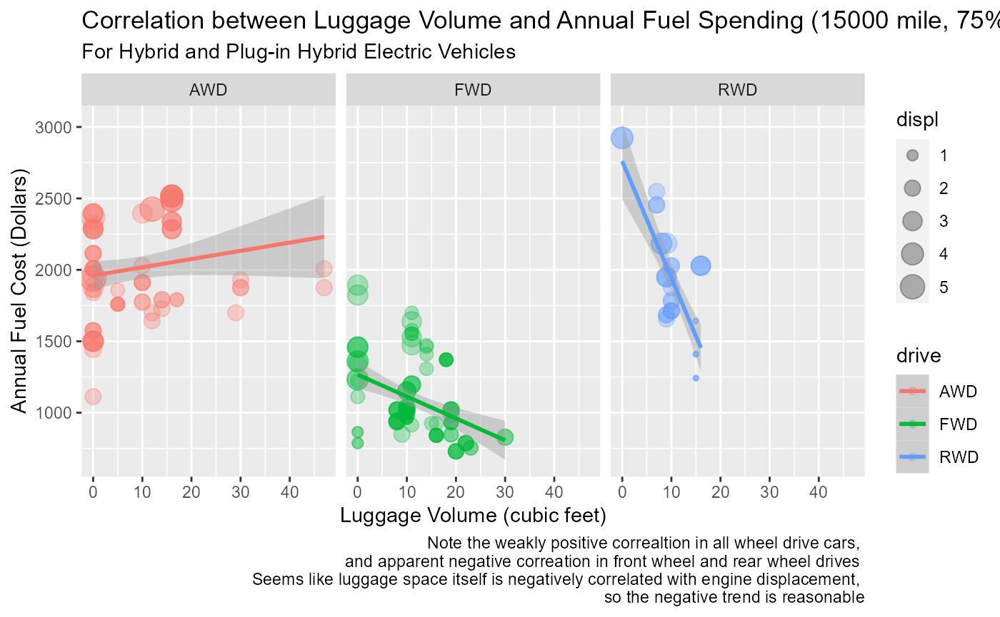
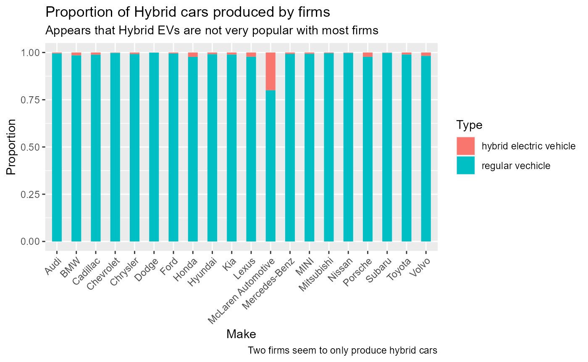

#' @import ggplot2
#' @import dplyr
#' @import tidyverse
#' @import here
#' @import readr
library(boringTictactoe)
library(tidyverse)
#> ── Attaching packages ─────────────────────────────────────── tidyverse 1.3.2 ──
#> ✔ ggplot2 3.4.0 ✔ purrr 0.3.5
#> ✔ tibble 3.1.8 ✔ dplyr 1.0.10
#> ✔ tidyr 1.2.1 ✔ stringr 1.4.1
#> ✔ readr 2.1.3 ✔ forcats 0.5.2
#> ── Conflicts ────────────────────────────────────────── tidyverse_conflicts() ──
#> ✖ dplyr::filter() masks stats::filter()
#> ✖ dplyr::lag() masks stats::lag()
library(here)
#> here() starts at F:/R/statparadigm/boring_tictactoe
if(!dir.exists(here("data"))) { dir.create(here("data")) }
# saves data only once (not each time you knit a R Markdown)
if(!file.exists(here("data","tuition.RData"))) {
url_csv <- "https://raw.githubusercontent.com/rfordatascience/tidytuesday/master/data/2019/2019-10-15/big_epa_cars.csv"
big_mtcars <- readr::read_csv(url_csv)
# save the file to RDS objects
save(big_mtcars, file = here("data","big_mtcars.RData"), compress='xz')
}
#> Rows: 41804 Columns: 83
#> ── Column specification ────────────────────────────────────────────────────────
#> Delimiter: ","
#> chr (22): drive, eng_dscr, fuelType, fuelType1, make, model, mpgData, trany,...
#> dbl (59): barrels08, barrelsA08, charge120, charge240, city08, city08U, city...
#> lgl (2): phevBlended, tCharger
#>
#> ℹ Use `spec()` to retrieve the full column specification for this data.
#> ℹ Specify the column types or set `show_col_types = FALSE` to quiet this message.Question to answer: How does the fuel consumption and associated fuel cost of hybrid and plugin hybrid electric vehicles vary by drive train and luggage space? Also, do major car makers have a difference in inclination to produce hybrid vehicles?
The data came from U.S. Environmental Protection Agency (EPA) on car fuel efficiency.
load(here("data","big_mtcars.RData"))
big_mtcars <- big_mtcars %>% filter(!str_detect(eng_dscr, "CHEV")) %>%
filter(str_detect(eng_dscr, "(HEV)|(PHEV)")) %>%
select(cylinders, displ, drive, make, trany, trans_dscr, eng_dscr, evMotor,
hlv, lv2, lv4, hpv, pv2, pv4,
city08, highway08, fuelCost08, fuelType1)
big_mtcars <- as_tibble(big_mtcars)
#### Calculate unit fuel cost
big_mtcars <- big_mtcars %>%
mutate(fuel_unit_price = fuelCost08/(15000*0.55/city08 + 15000*0.45/highway08))
regular_fuel_price <-
big_mtcars %>%
filter(fuelType1=="Regular Gasoline") %>%
select(fuel_unit_price) %>%
map_dbl(.f = mean)
premium_fuel_price <-
big_mtcars %>%
filter(fuelType1=="Premium Gasoline") %>%
select(fuel_unit_price) %>%
map_dbl(.f = mean)
big_mtcars <- big_mtcars %>%
mutate(fuel_unit_price =
ifelse(big_mtcars$fuelType1=="Regular Gasoline", regular_fuel_price, premium_fuel_price))
#### Calculate total passenger volume and total luggage volume
big_mtcars <- big_mtcars %>%
mutate(passenger_volume = hpv + pv2 + pv4, luggage_volume = hlv + lv2 + lv4)
#### compute 75% city, 25% highway combined cost of driving 15,000 miles
big_mtcars <- big_mtcars %>%
mutate(annual_cost= 15000/weighted_mean_vector(city08, highway08, weights=c(0.75, 0.25))*fuel_unit_price)
big_mtcars <- big_mtcars %>%
mutate(drive=
fct_collapse(drive, "FWD" = c("Front-Wheel Drive"),
"RWD" = c("Rear-Wheel Drive"),
"AWD" = c("4-Wheel or All-Wheel Drive", "4-Wheel Drive", "All-Wheel Drive")))
big_mtcars %>%
split(big_mtcars$drive) %>%
map(~ lm(annual_cost ~ displ + cylinders, data = .x)) %>%
map(summary)
#> $AWD
#>
#> Call:
#> lm(formula = annual_cost ~ displ + cylinders, data = .x)
#>
#> Residuals:
#> Min 1Q Median 3Q Max
#> -734.20 -55.55 64.99 114.91 312.54
#>
#> Coefficients:
#> Estimate Std. Error t value Pr(>|t|)
#> (Intercept) 1173.31 91.35 12.843 < 2e-16 ***
#> displ -407.85 87.48 -4.662 1.43e-05 ***
#> cylinders 372.21 53.47 6.962 1.38e-09 ***
#> ---
#> Signif. codes: 0 '***' 0.001 '**' 0.01 '*' 0.05 '.' 0.1 ' ' 1
#>
#> Residual standard error: 225.5 on 71 degrees of freedom
#> Multiple R-squared: 0.5706, Adjusted R-squared: 0.5585
#> F-statistic: 47.17 on 2 and 71 DF, p-value: 9.287e-14
#>
#>
#> $FWD
#>
#> Call:
#> lm(formula = annual_cost ~ displ + cylinders, data = .x)
#>
#> Residuals:
#> Min 1Q Median 3Q Max
#> -301.85 -143.47 -33.98 71.38 618.33
#>
#> Coefficients:
#> Estimate Std. Error t value Pr(>|t|)
#> (Intercept) -45.09 164.69 -0.274 0.7849
#> displ -125.39 69.26 -1.810 0.0734 .
#> cylinders 325.34 62.76 5.184 1.26e-06 ***
#> ---
#> Signif. codes: 0 '***' 0.001 '**' 0.01 '*' 0.05 '.' 0.1 ' ' 1
#>
#> Residual standard error: 215.8 on 93 degrees of freedom
#> Multiple R-squared: 0.3762, Adjusted R-squared: 0.3628
#> F-statistic: 28.05 on 2 and 93 DF, p-value: 2.939e-10
#>
#>
#> $RWD
#>
#> Call:
#> lm(formula = annual_cost ~ displ + cylinders, data = .x)
#>
#> Residuals:
#> Min 1Q Median 3Q Max
#> -284.1 -204.6 -47.0 186.7 710.7
#>
#> Coefficients:
#> Estimate Std. Error t value Pr(>|t|)
#> (Intercept) 1047.6 166.8 6.281 6.37e-07 ***
#> displ -33.7 244.1 -0.138 0.891
#> cylinders 214.4 145.9 1.469 0.152
#> ---
#> Signif. codes: 0 '***' 0.001 '**' 0.01 '*' 0.05 '.' 0.1 ' ' 1
#>
#> Residual standard error: 272.1 on 30 degrees of freedom
#> Multiple R-squared: 0.6233, Adjusted R-squared: 0.5981
#> F-statistic: 24.81 on 2 and 30 DF, p-value: 4.373e-07
big_mtcars %>% ggplot(aes(x=displ, y=annual_cost, color=drive)) +
geom_point() +
geom_smooth(method="lm") +
facet_grid(.~drive, scales = "fixed") +
ylab("Annual Fuel Cost (Dollars)") + xlab("Engine Displacement (Liters)") +
labs(title="Correlation between Engine Displacement and Annual Fuel Spending (15000 mile, 75% city and 25% highway), startified by drive type",
subtitle = "For Hybrid and Plug-in Hybrid Electric Vehicles",
caption = "Note consistent positive correaltion with engine displacement and fuel spending \n but significantly lower intercept for front wheel drive vehicles")
#> `geom_smooth()` using formula = 'y ~ x'
It seems like fuel cost is positively associated with engine displacement, which is reasonable, in all drive trains. The 3 drive trains also share a very similar slope in the linear models fitted. However, the front wheel drive has a significantly lower intercept (and hence lower baseline fuel spending), which is most likely due to FWD cars being most efficient (RWD and AWD cars need long transmission shafts to convey the power delivered by the frontal engine to rear tires, which may result in loss of efficiency).
big_mtcars %>% ggplot(aes(x=luggage_volume, y=annual_cost, color=drive)) +
geom_point(aes(size=displ), alpha=0.3) +
geom_smooth(method="lm") +
facet_grid(.~drive, scales = "fixed")+
ylab("Annual Fuel Cost (Dollars)") + xlab("Luggage Volume (cubic feet)") +
labs(title="Correlation between Luggage Volume and Annual Fuel Spending (15000 mile, 75% city and 25% highway), startified by drive type",
subtitle = "For Hybrid and Plug-in Hybrid Electric Vehicles",
caption = "Note the weakly positive correaltion in all wheel drive cars, \n and apparent negative correation in front wheel and rear wheel drives \n Seems like luggage space itself is negatively correlated with engine displacement, \n so the negative trend is reasonable")
#> `geom_smooth()` using formula = 'y ~ x'
Interestingly, luggage volume seem to be negatively associated with fuel spending in FWD and RWD model. This apparently counterintuitive association (because one would larger luggage volume usually means larger, heavier chassis and higher fuel consumption) is probably attributable to the fact that cars with small to no luggage volumes are the more sporty cars that consumes more fuel, and the cars with ample luggage spaces are MPVs or SUVs that don’t have as much emphasis on performance and hence consumes less fuel.
load(here("data","big_mtcars.RData"))
big_mtcars = big_mtcars%>% select(eng_dscr, make, model)
big_mtcars = big_mtcars %>% replace_na(list(eng_dscr = ''))
big_mtcars = big_mtcars %>%
mutate(iselectric=str_detect(eng_dscr, "HEV|PHEV") &
!str_detect(eng_dscr, "CHEV"), placeholder=1)
df = big_mtcars %>% group_by(make) %>% summarise(ev_count = sum(iselectric), total_count = sum(placeholder))
df = df %>% filter(ev_count >= 1 & total_count >= 10) %>% mutate(ev_count = ev_count + 1, total_count = total_count + 1)
chi_square_independence(data.matrix(df %>% select(ev_count, total_count)))
#> [1] 2.031847e+02 7.911291e-33
df %>% mutate("hybrid electric vehicle" = ev_count/total_count,
"regular vechicle" = 1- ev_count/total_count) %>%
pivot_longer(cols=!c(make, ev_count, total_count),
names_to = "Type", values_to ="prop") %>%
ggplot(aes(fill = Type, y= prop, x= make)) +
geom_bar(position="fill", stat="identity", width=0.5) +
theme(axis.text.x = element_text(angle = 45, hjust=1)) +
labs(title="Proportion of Hybrid cars produced by firms",
subtitle="Appears that Hybrid EVs are not very popular with most firms",
caption="Two firms seem to only produce hybrid cars") +
ylab("Proportion") +
xlab("Make")
The general trends seems to be car firms are unwilling to produce hybrid vehicles or the data set has some kind of selection bias in it.